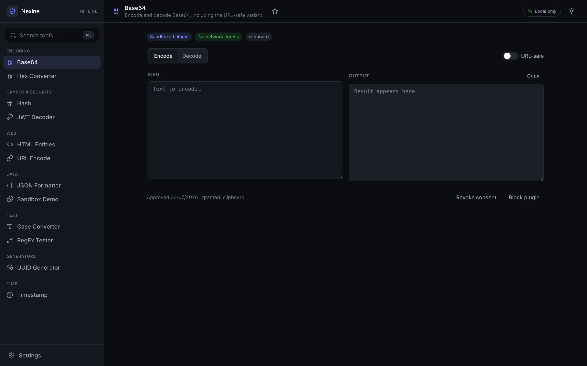
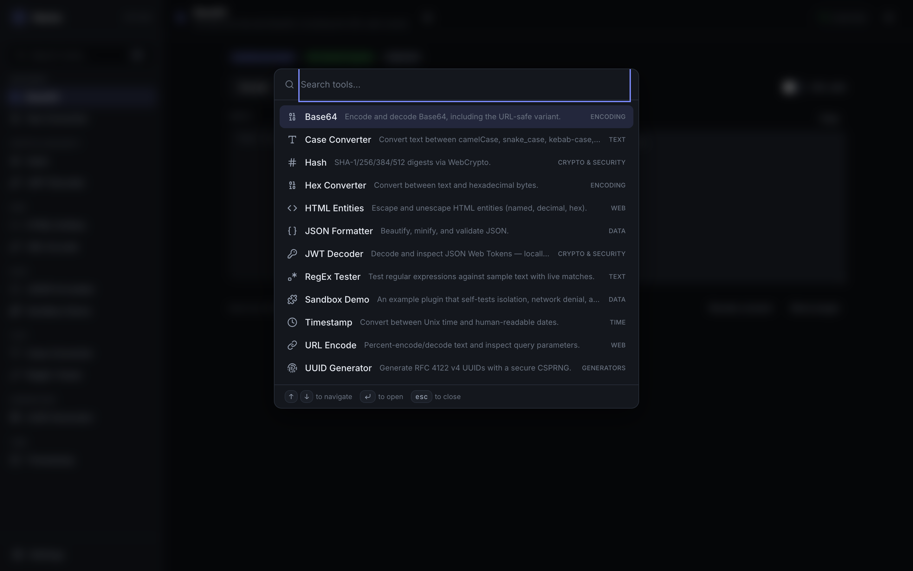
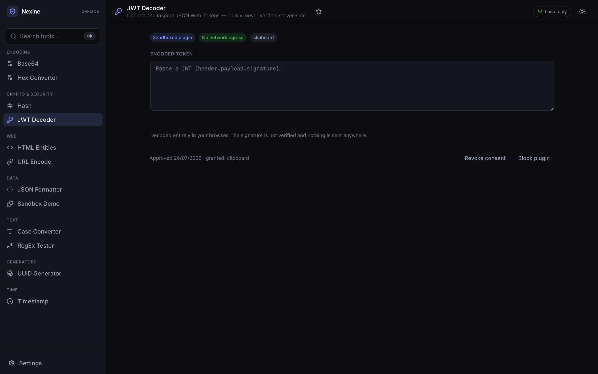
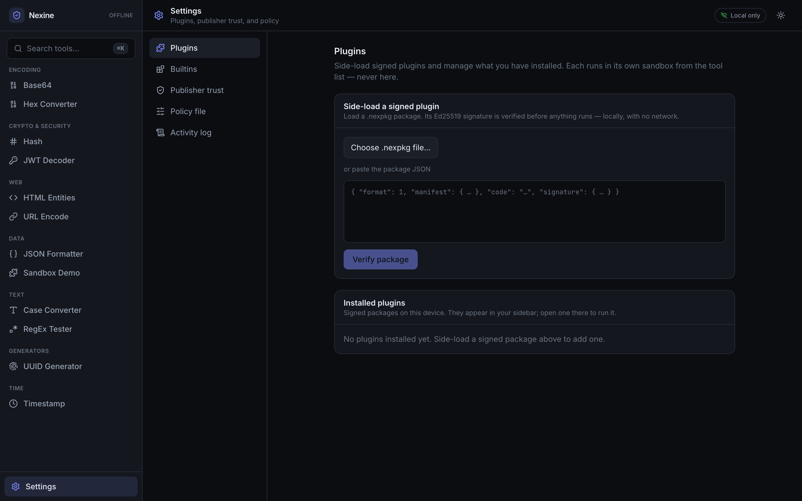
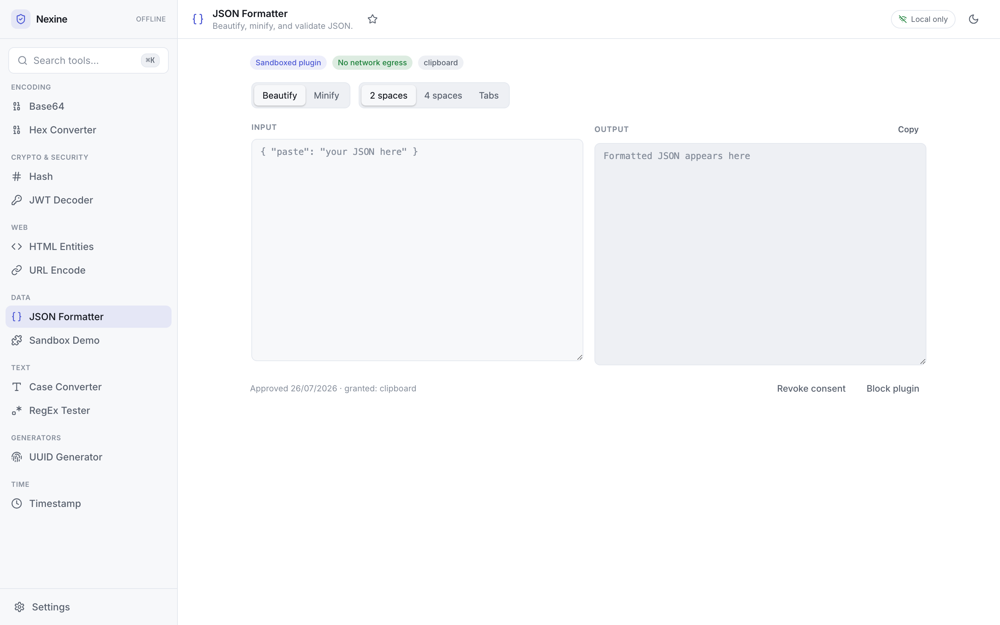

Nothing leaves your machine unless you allow it.
Nexine is an offline-first, no-egress developer toolbox — JWT, Base64, JSON,
hashing and more — on a governed, sandboxed plugin platform. The app document itself
ships connect-src 'none' and can't open a network connection, and every
tool is denied the network by default — a plugin reaches a host only when you
explicitly, and specifically, allow it.
Runs entirely in your browser — nothing is uploaded. This hosted build is a live demo; for the hardened deployment, use the desktop app or self-host.
Why Nexine
Enterprise developers paste JWTs, tokens and PII into random online tools every day. Nexine is the governable, sanctioned alternative — and its moat is enforcement, not a promise.
No-egress by default
The app document ships connect-src 'none' — fetch, XHR, WebSocket and
beacons are blocked by the browser, verified in CI. Plugins get no network either,
until you grant scoped access.
Everything is sandboxed
There is no privileged in-process path. The first-party tools run in the exact same opaque-origin iframe as an untrusted, side-loaded plugin.
Deterministic denial
Unlike VS Code extensions (shared Node process, unrestricted fs/network), a plugin's network is denied by its own iframe CSP. The host is never a proxy.
DIY governance
Install-time consent per plugin & version, publisher trust pinning, allow→blocklist→lockdown policy modes, a shareable policy file, and a metadata-only audit log — all on device.
Signed side-loading
Plugins ship as .nexpkg packages with a detached Ed25519 signature,
re-verified on every mount. Built and signed locally with the
nexine CLI.
Desktop + self-host
One static build ships as a Tauri desktop app (global hotkey, OS keychain) and a Docker/nginx site that runs fully air-gapped.
See it
Real screenshots of the running app. Click any image to enlarge.

Sandboxed plugin /
No network egress badges and the per-plugin consent bar.




Tool catalog
Twelve tools ship built-in — each a sandboxed plugin, enabled by default and removable. Type to filter.
No tools match that filter.
The security model
The core promise: the app never phones home, and your data stays local unless you deliberately grant a plugin scoped access to a specific host. Here is exactly how that is enforced.
-
The app can't open a connection. Its document ships
connect-src 'none', so fetch, XHR, WebSocket, EventSource and sendBeacon are blocked at the platform level. - Single source of truth. One CSP builder in the framework-free core, injected at build time and re-sent as an HTTP header when self-hosted.
-
No third-party origins. Fonts are self-hosted; there are no analytics or
error-reporting SDKs, and never
unsafe-eval. -
Verified in CI. A test asserts the production build contains
connect-src 'none'— a broken guarantee fails the pipeline.
Per-plugin isolation
Nexine runs every tool the same way — an untrusted plugin and a first-party builtin share one path:
Opaque-origin iframe
Each plugin runs in a sandbox="allow-scripts" iframe with no
allow-same-origin. It cannot read the host DOM, cookies, storage, or
even the parent's location.
Egress is a scoped, granted permission
The host computes a CSP from a plugin's granted permissions. No
network grant → connect-src 'none'. A grant is narrowed to
the exact hosts you allow — deny-by-default, admin-controlled, and never routed
through a host proxy. See Governance.
Deny-by-default permissions
A manifest is validated before any code runs. The permission engine resolves declared vs. policy into a granted set. Ungranted capabilities are unreachable.
Brokered capabilities
Storage and clipboard are reached only through a permission-checked RPC broker over
a private MessageChannel. Storage is namespaced per plugin.
The plugin platform
One execution path for everything. Build a tool against the public SDK, sign it, and side-load it — no account, no network.
Public SDK
A stable serializable manifest, a small audited permission vocabulary (network
+ host allowlist, clipboard, storage), plain-language
dataFlows, and a framework-agnostic
definePlugin → mount(root) guest API.
Signed packages
A .nexpkg is a manifest + bundled classic-script module + a detached
Ed25519 signature over a canonical envelope. Verify is a hard gate on
integrity/authenticity; trust is reported separately.
Build, sign, and verify a plugin
# build the `nexine` CLI, then generate an Ed25519 keypair pnpm build:cli pnpm nexine keygen --label "My Plugins" # keep *.key.json secret # bundle + sign a plugin's source into a .nexpkg pnpm nexine pack examples/cron-explainer --key nexine.key.json # verify integrity, authenticity, and (optionally) trust — all offline pnpm nexine verify dev.nexine.cron-explainer-1.0.0.nexpkg --trust nexine.pub.json
.nexpkg file to side-load it.
It appears in the sidebar under its category, alongside the builtins, and runs in its
own sandbox.
Governance, on device
The free DIY tier is enforceable precisely because the host owns the plugin lifecycle — what loads, from where, with what permissions.
Install-time consent
Every tool shows a consent card on first open, listing the exact permissions it will use. Consent is recorded per plugin and version — a version bump requires re-approval.
Publisher trust
Pin a publisher's public key so their packages show as trusted, or require a trusted publisher so unpinned packages are blocked rather than merely consent-gated.
Policy modes
A graduated posture: allow → blocklist →
lockdown, plus permission ceilings. Export a shareable policy file
across devices.
Egress control
Flip network to deny-by-default, then allow exact https origins
globally or grant one host to a single plugin — from Settings or a distributed
policy file. A plugin keeps every other capability; it just can't reach a host you
didn't name.
Audit log
An on-device, capped ring buffer of governance decisions — installs, consents, blocks, pins, policy updates, and each granted egress host. Metadata only: never a plugin input, output, or payload.
Architecture
A pnpm workspace monorepo with strict, one-directional dependencies — everything points
up toward the framework-free core (ESLint forbids React in core).
packages/core
Framework-free domain: tool metadata, registry, search, and the CSP builder. No React, ever.
packages/sdk
The public plugin contract: manifest, permissions, data-flows, validation, RPC protocol, guest API.
packages/plugin-runtime
The sandbox: permission engine, per-plugin CSP, RPC host, loadPlugin /
loadPackage.
packages/packaging + cli
Signed .nexpkg format (canonical JSON, Ed25519 via WebCrypto,
TrustStore) and the nexine binary.
packages/host
The app: shell, routing, storage, the sandbox host, builtins, and the governance UI.
tools/* + examples/*
One package per tool — a pure, unit-tested transform reused by the builtins — plus sample side-loadable plugins.
Get started
Requires Node ≥ 20 and pnpm. Everything runs locally.
pnpm install # install workspace dependencies pnpm dev # dev server → http://localhost:5273 pnpm test # unit tests (transforms, CSP, signing, permissions) pnpm build # production build (strict no-egress CSP)
docker build -f deploy/Dockerfile -t nexine . docker run --rm -p 8080:80 nexine # → http://localhost:8080
# requires the Rust toolchain pnpm desktop:dev # run the Tauri desktop app in development pnpm desktop:build # produce a native installer
Self-hosting
Nexine is static and backend-free — serve packages/host/dist from any
static host, including air-gapped networks.
Build the static bundle
pnpm build emits packages/host/dist with the strict CSP
already injected into index.html.
Serve it anywhere
Use the provided Docker image, or drop the files behind nginx / any static server.
The bundled nginx config re-sends the CSP as a real header plus
X-Content-Type-Options, Referrer-Policy and a
restrictive Permissions-Policy.
Verify no-egress yourself
Open DevTools → Network while using it: requests go only to the serving origin,
never to any external host. Grep dist/ and you'll find no external
URLs.
Reference documentation
Deep dives live in the repository, rendered on GitHub.